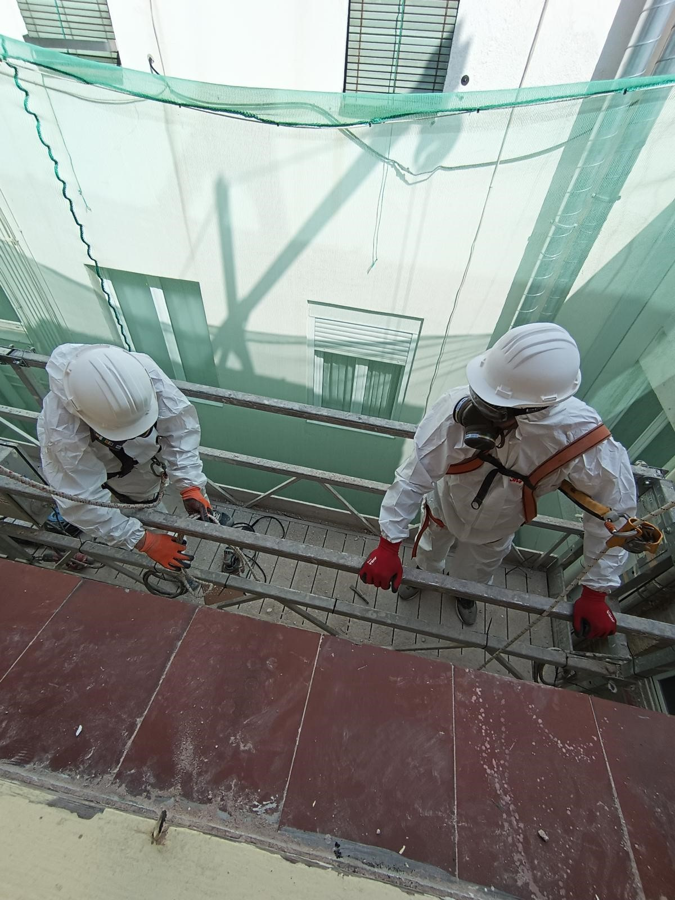

SERVICIO
ELECTRICISTA
- ¿Pisos sin Luz? Restauramos la electricidad en tu hogar rápidamente, cualquier día y hora.
- ¿Poca potencia? Cambiamos Interruptores de Control de Potencia.
- ¿Miedo a cortocircuitos? Revisamos cuadros eléctricos para detectar fallos o irregularidades.
- Cambio de acometida con máxima precisión y seguridad.
- Instalación de lámparas y enchufes en cualquier estancia.
- Instalación de cuadros eléctricos según normativa vigente.
- Cambio de magnetotérmicos para proteger tu sistema eléctrico.

SERVICIO
ALBAÑILERÍA
- Cambiamos azulejos de baño y cocina.
- Levantamos paredes de ladrillo o pladur.
- Solados y alicatados con acabados profesionales.
- Reparación de humedades y filtraciones.
- Pequeñas reformas y grandes obras.

SERVICIO
FONTANERÍA
- Atascos en fregaderos.
- Averías en el baño.
- Cisternas que pierden agua.
- Radiadores que gotean.
- Agua sin presión.
- Fuga en tuberías.
- Reparación e instalación de calderas, calentadores y termos.
- Reparación de bajantes, montantes y desagües.

SERVICIO
CARPINTERÍA
- Reparaciones y arreglos de puertas, ventanas, cocinas, armarios, muebles.
- Sustitución de marcos, puertas o molduras.
- Añadir o cambiar cerraduras, picaportes y manetas.
- Reparamos puertas correderas y sustitución de guías.
- Reparamos vidrios de puertas.
- Restauramos ventanas y balconeras de madera.
- Ajustamos ventanas que no cierran bien.
- Instalamos ventanas y puertas de aluminio.

SERVICIO
TRABAJOS VERTICALES
- Trabajos verticales puntuales
- Reparaciones puntuales.
- Rehabilitación de fachadas.
- Pintura en general reparacion fachadas.
- Reparación limpieza pintura de patios de luces.
- Montaje bajante PVC.
- Sustitución bajante uralita/fibrocemento por pvc.
- Montaje canal aire acondicionado.
- Colocación de sistemas anti-palomas pinchos o hilo nailon.
- Reparación de tejado terrado cubierta barcelona, limpieza.
- Sellado de juntas de dilatación.
- Colocación de elementos varios en fachada.
- Colocación de mayas de protección, balcon, cornisa, etc.
- Manipulación de amianto (colaboradores acreditados RERA).